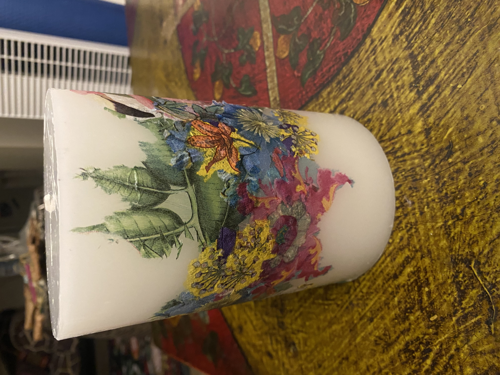
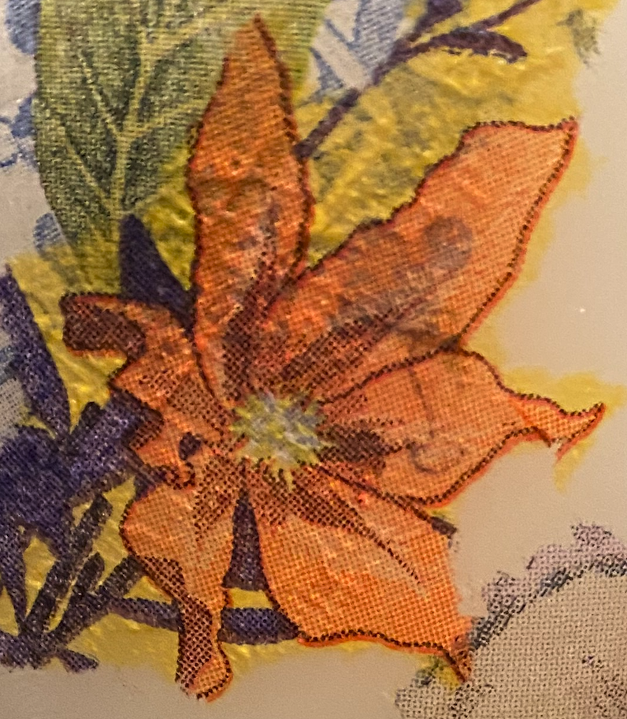

Beauty emerges in the unexpected — where colour, texture and shape meet and mingle. Each piece develops its own character, slowly revealing something distinctive and unique.
View ArtworkUpcoming Exhibition
314 Abercrombie Gallery
314 Abercrombie Street, Darlington NSW 2008
- Thu 19 NovLaunch, 6pm
- Fri 20 NovOpen, 8am–6pm
- Sat 21 NovOpen, 8am–6pm
- Sun 22 NovOpen, 8am–6pm
- Mon 23 NovOpen, 8am–6pm
About the Artist
Koa Hood is a Sydney-based artist working in decoupage and collage — building bold color and pattern from layers of cut paper on found and forgotten objects. Self-taught and still discovering her style, she finds beauty in the imperfect: wrinkled edges, hidden images and the curious depth that only comes from layer upon layer.
learn more
“Paper cut, torn and layered by hand. Layer by layer, paper becomes pattern, pattern becomes light.”
Koa Joy Hood